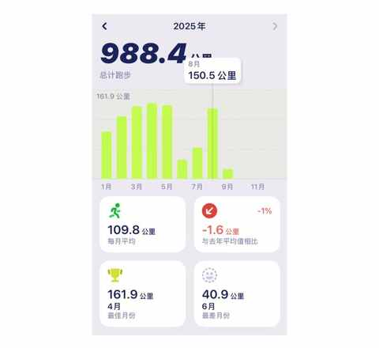
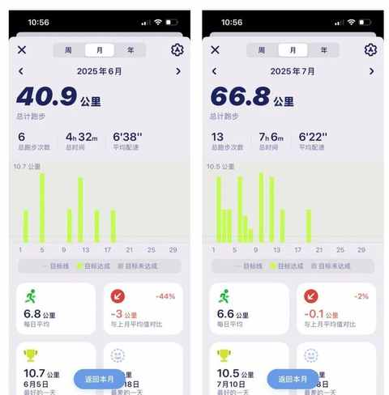
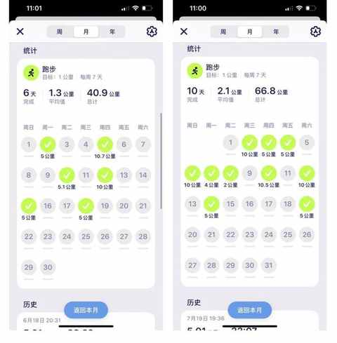
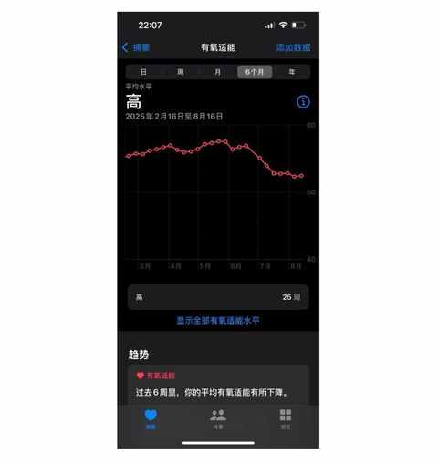
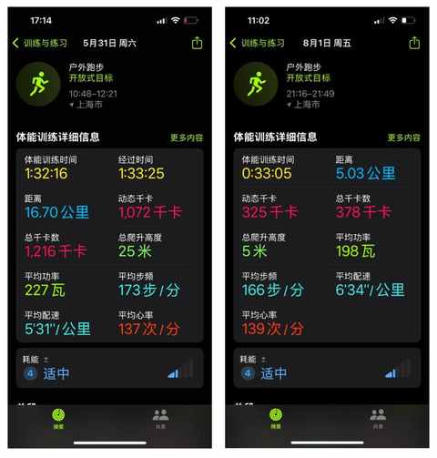
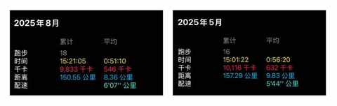
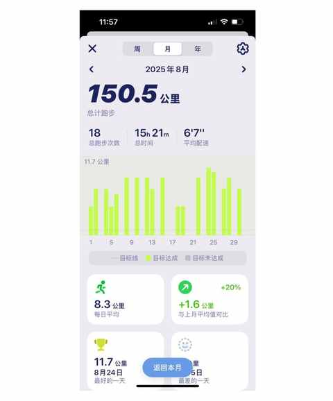
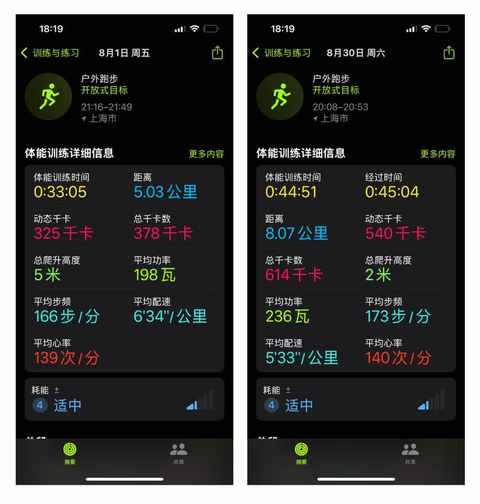

当月跑量陡降100km，我才明白“跑量是基础”的真正含义
约斯特普通
2025-09-03
一、非预期的跑量陡降
年初的计划是保持每月 130-160km 的跑量，然后试试看在周末跑几次 25km 及以上的长距离，再报名一个半马或全马比赛感受下比赛氛围。

最终，由于各种意料中和意料外的原因在 6 月和 7 月连续两个月都出现连续 10多天未跑步的情况，前面 5 个月良好的节奏被彻底打断。


二、几个显著的表现
结合 Apple Watch 上的记录，在数据上主要是下面两个表现：
① 有氧适能水平下降

② 心率上升，步频减少

③ 速度能力下降

三、恢复和适应期
① 偏 保守的策略
时间很快来到 8 月份，决定不再摸鱼咯，要逐步恢复跑量，定的目标是至少要完成 100km，最终跑了 150km。

在整个恢复跑量的过程前 2 周的体感是：
易累+恢复慢。
暑期温度偏高，单次跑步的距离从 5km 过渡到 8km，再到 10km 的。
整个 8 月没有单次跑超过 12km的距离。
② 增加专项力量训练
在后期疲劳感下降之后，加入健身房的私教课，主练臀腿的力量

③ 不求速度先稳心率
通过一个月的努力，心率基本回到了 5 月份的水平。

四、跑量是基础
这句话刚开始就在各种讲跑步的书中看到和自媒体博主的口中听到。
作为跑步新手，对这句话的感知是比较模糊的，隐约能感觉到这句话应该是对的，因为先有量变才能引起质变。
通过 6、7、8 这三个月的实践，彻底感知到跑量的重要性！
准备把 9、10、11、12 月这四个月的跑量都提到 200km+，每周一次 20km 或以上的中长跑。